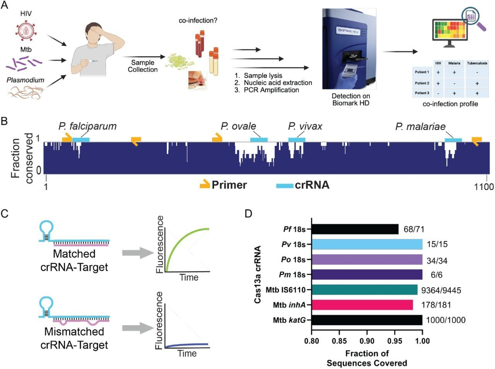
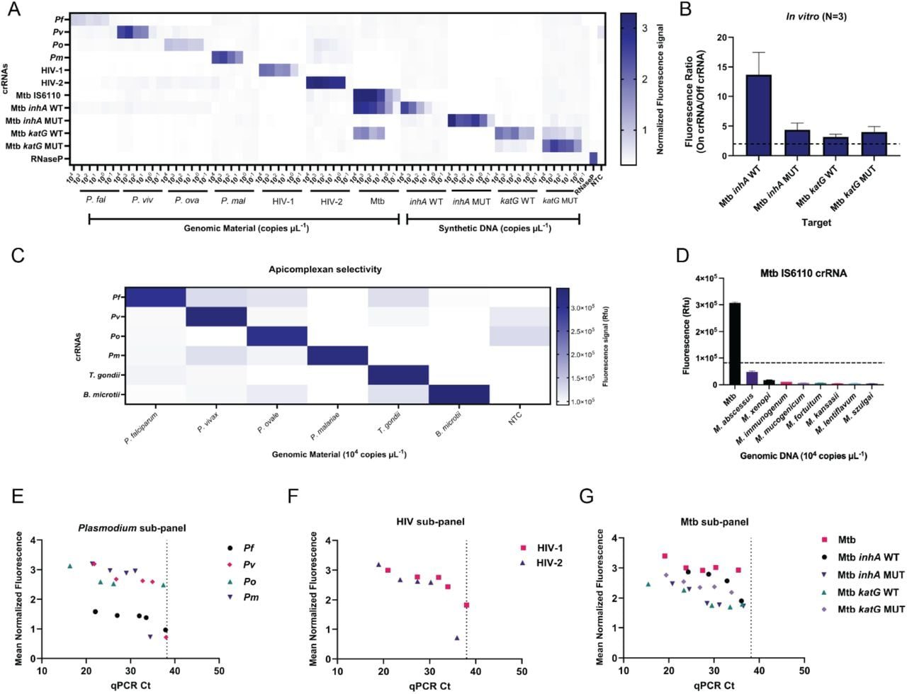
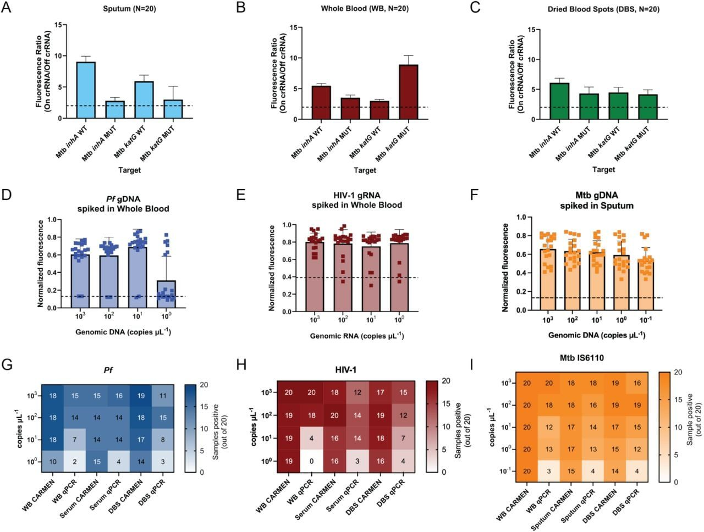
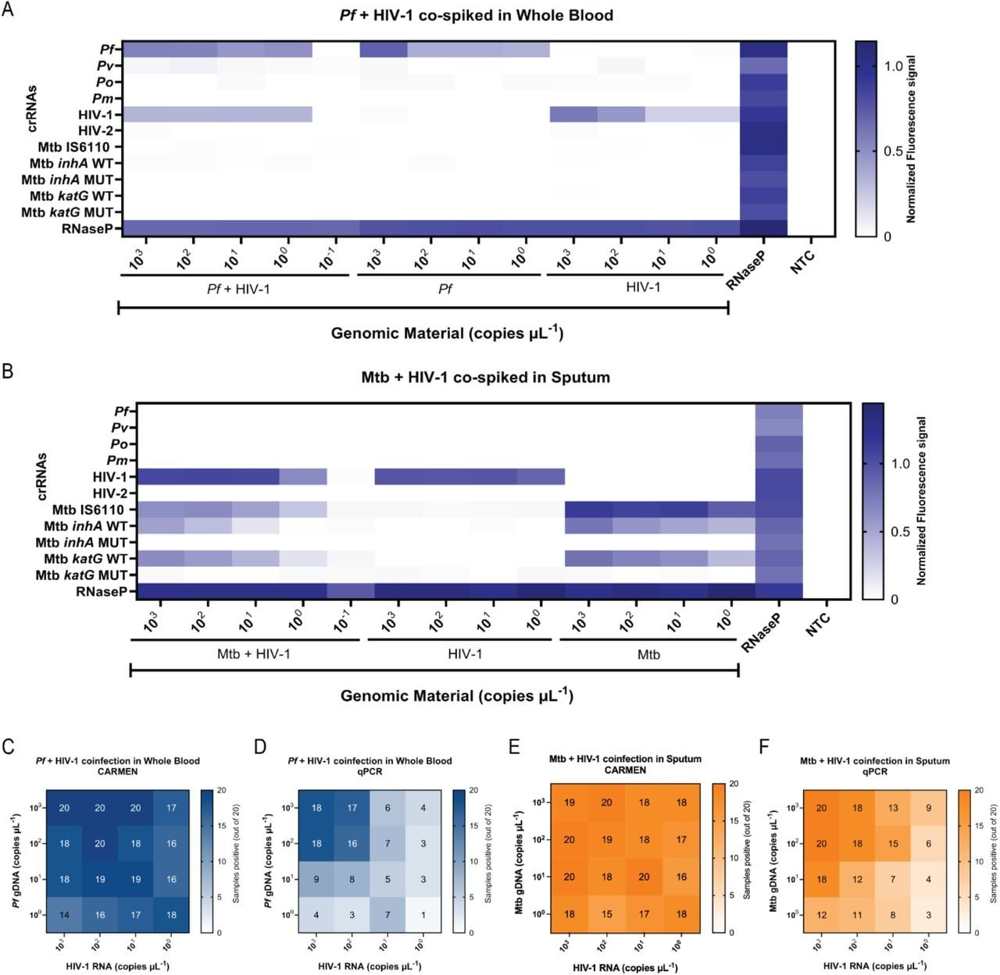
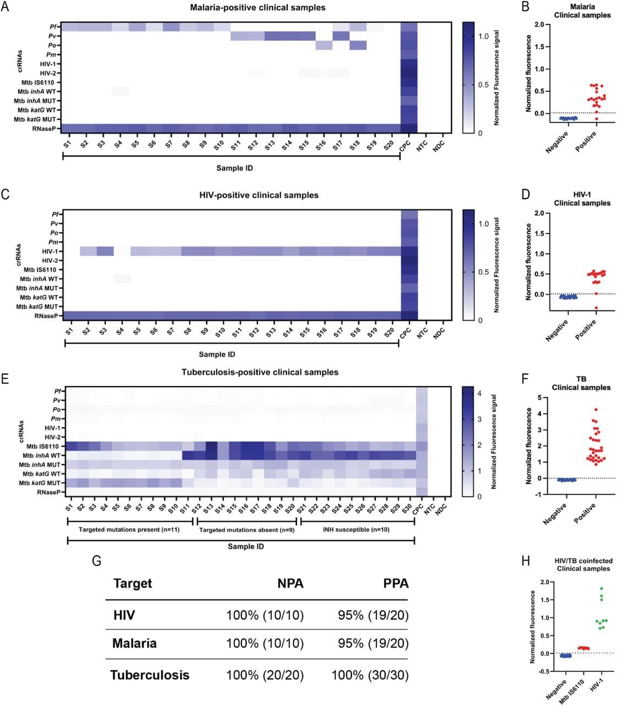

Три опасные инфекции и лекарственная устойчивость в одном тесте на базе CRISPR


Полное описание рисунка
Дизайн и рабочий процесс диагностической панели HTM CARMEN CRISPR. (A) Схема рабочего процесса HTM CARMEN, иллюстрирующая сбор образцов, экстракцию нуклеиновых кислот, амплификацию мишеней и детекцию CRISPR-Cas13a на платформе CARMEN, а также мультиплексную детекцию ВИЧ, Plasmodium, Mtb и коинфекций. (B) Стратегия дизайна для дифференциации видов Plasmodium. Консервативность последовательностей 18S рРНК P. falciparum, P. vivax, P. ovale и P. malariae показана вместе с положениями амплификационных праймеров и видоспецифичных crРНК. Праймеры были расположены в консервативных областях, тогда как crРНК нацелены на области, различающие виды, идентифицированные с помощью ADAPT. (C) Схема аллель-специфичной детекции crРНК для локусов промотора inhA −777 C>T и katG S315T/N Mtb. Спаривание родственной crРНК с мишенью способствует активации Cas13a и генерации флуоресценции, тогда как однонуклеотидное несовпадение снижает активацию, позволяя различать аллели дикого типа и мутантные аллели на основе их относительных сигналов флуоресценции. (D) Прогнозируемое покрытие последовательностей выбранных анализов на Plasmodium и Mtb по общедоступным наборам данных NCBI. Покрытие представляет собой долю последовательностей, которые, согласно прогнозам, поддерживают связывание праймеров и активность crРНК. Количество покрытых последовательностей относительно общего количества оцененных указано для каждого анализа.
ВИЧ, туберкулез и малярия нередко поражают человека одновременно, но традиционная диагностика заставляет проверять каждую болезнь отдельно. Это затягивает назначение лечения и усугубляет риски для жизни пациента. Американские исследователи представили мультиплексную платформу HTM CARMEN на основе системы CRISPR-Cas13a. Она способна за один запуск выявить четыре вида малярийного плазмодия, ВИЧ-1, ВИЧ-2, микобактерию туберкулеза и ключевые мутации устойчивости к изониазиду.
Главное
- CRISPR-тест одновременно выявляет ВИЧ, туберкулез, 4 вида малярии и мутации устойчивости к изониазиду
- Точность на клинических образцах составила 95% для малярии и ВИЧ-1 и 100% для микобактерии туберкулеза
- Система распознает сочетанные инфекции в цельной крови, сыворотке, мокроте и сухих каплях крови
Подробнее
Система HTM CARMEN использует белок Leptotrichia wadei Cas13a (LwaCas13a) и набор специфических кРНК (crRNA), разработанных с помощью алгоритмов ADAPT и BADGERS. После изоляции нуклеиновых кислот проводится единая мультиплексная ПЦР с обратной транскрипцией для восьми целевых участков, после чего образцы микрофлюидно смешиваются с CRISPR-реагентами. При распознавании мишени Cas13a проявляет внемишечную (коллатеральную) РНК-азную активность, расщепляя флуоресцентные зонды. Платформа распознает четыре вида Plasmodium (P. falciparum, P. vivax, P. ovale, P. malariae), ВИЧ-1, ВИЧ-2, Mycobacterium tuberculosis (Mtb), а также одиночные нуклеотидные полиморфизмы (SNP) inhA −15 C>T и katG S315T/N, ассоциированные с устойчивостью к изониазиду (INH).
В испытаниях на модельных образцах с искусственной сочетанной инфекцией (P. falciparum/ВИЧ-1 и Mtb/ВИЧ-1) платформа успешно выявила оба патогена в различных концентрациях. На валидационной выборке клинических образцов чувствительность (positive percent agreement) составила 95% для малярии (19/20), 95% для ВИЧ-1 (19/20) и 100% для Mtb (30/30) при 100% специфичности (negative percent agreement) для всех мишеней. Кроме того, тест успешно определил оба возбудителя во всех девяти образцах от пациентов с подтвержденной ко-инфекцией ВИЧ и туберкулеза.
Ограничения
Исследование выполнено на небольшой клинической выборке (от 9 до 30 образцов на патоген), а сама работа опубликована как препринт (Publish Ahead of Print) и требует независимой валидации на реальных потоках пациентов.
Подробный разбор статьи
Резюме
ВИЧ, туберкулез (ТБ) и малярия часто встречаются в одних и тех же регионах, однако существующие методы диагностики обычно ориентированы на конкретное заболевание, что затрудняет выявление коинфекций и контроль лекарственной устойчивости. Авторы представили HTM CARMEN — мультиплексную платформу на основе CRISPR-Cas13a, способную одновременно определять ВИЧ-1, ВИЧ-2, четыре вида Plasmodium и Mycobacterium tuberculosis (Mtb), а также выявлять мутации в генах inhA и katG, связанные с устойчивостью к изониазиду.
Важно
Система HTM CARMEN позволяет одновременно диагностировать ВИЧ, туберкулез и малярию, а также определять устойчивость к лекарствам с точностью до 100% для Mtb и 95% для ВИЧ-1 и малярии.
Пояснение
CRISPR-Cas13a — это система редактирования РНК, которую в диагностике используют как «молекулярные ножницы»: при обнаружении специфической последовательности патогена фермент активируется и разрещает репортерную молекулу, создавая флуоресцентный сигнал.
В ходе лабораторных испытаний система продемонстрировала высокую селективность и способность различать одиночные нуклеотидные замены в различных биологических средах: цельной крови, сыворотке, мокроте и высушенных пятнах крови. При тестировании 20 искусственно созданных образцов для каждого условия HTM CARMEN показала более высокую чувствительность к низким концентрациям патогенов по сравнению с qPCR. В экспериментах с коинфекциями (P. falciparum/ВИЧ-1 и Mtb/ВИЧ-1) система успешно детектировала оба возбудителя при различных соотношениях их концентраций.
При анализе клинических образцов с подтвержденным диагнозом метод показал положительное совпадение результатов (PPA) на уровне 95% для малярии (19/20), 95% для ВИЧ-1 (19/20) и 100% для Mtb (30/30). Отрицательное совпадение (NPA) составило 100% для всех целей. Кроме того, система выявила оба патогена во всех девяти образцах с подтвержденной коинфекцией ВИЧ-ТБ. Полученные данные подтверждают эффективность интеграции диагностики нескольких инфекций и анализа резистентности в рамках одной программируемой молекулярной платформы.
Введение
Глобальное бремя инфекций и диагностические вызовы
Туберкулез (ТБ), ВИЧ и малярия ежегодно поражают от 270 до 280 миллионов человек, преимущественно в странах с низким и средним уровнем дохода. Современная клиническая диагностика часто опирается на одноцелевые тесты, что затрудняет выявление коинфекций и замедляет постановку диагноза. В условиях, где эти заболевания циркулируют одновременно, отсутствие интегрированных систем создает «слепые зоны» в лечении и эпидемиологическом надзоре.
Важно
Ежегодно регистрируется до 280 млн случаев ТБ, ВИЧ и малярии, а текущие методы диагностики, ориентированные на один патоген, не позволяют эффективно выявлять коинфекции.
Клиническая значимость коинфекций
ВИЧ повышает восприимчивость к ТБ, часто вызывая внелегочные формы заболевания, которые трудно диагностировать по мокроте. Малярия, вызываемая четырьмя основными видами Plasmodium (P. falciparum, P. vivax, P. ovale, P. malariae), также пересекается с ВИЧ и ТБ. Коинфекции усложняют терапию: например, рифампицин при лечении ТБ снижает эффективность артемизининовых препаратов против малярии. Кроме того, существующие методы часто игнорируют резистентность к изониазиду (INH), фокусируясь только на рифампицине (RIF), что ведет к неадекватному лечению.
Пояснение
Синдромика — это совокупность клинических признаков, характерных для нескольких заболеваний, что часто затрудняет дифференциальную диагностику при коинфекциях.
Технология CARMEN и разработка HTM-панели
Для решения этих проблем авторы использовали платформу CARMEN, основанную на системе CRISPR-Cas13a. Эта технология позволяет проводить высокопроизводительный анализ: до 24 тестов для 192 образцов, что дает в сумме 4608 реакций в одном микрофлюидном чипе. Разработанная панель HTM CARMEN объединяет детекцию ВИЧ-1, ВИЧ-2, ТБ (включая маркеры резистентности к INH) и дифференциацию видов Plasmodium.
Пояснение
SHERLOCK и CARMEN — это методы молекулярной диагностики, использующие фермент Cas13, который при обнаружении целевой РНК начинает разрезать репортерные молекулы, создавая измеримый сигнал.
Валидация и оценка эффективности
Авторы провели оценку аналитической специфичности и способности различать однонуклеотидные замены in vitro. Тестирование проводилось на различных типах биоматериала: мокроте, сыворотке, цельной крови и сухих пятнах крови. Эффективность системы сравнивалась с количественной ПЦР (qPCR) на искусственных образцах с одним и несколькими патогенами. Финальный этап включал проверку на клинических образцах, подтвержденных как положительные на малярию, ВИЧ или ТБ, а также на образцах с коинфекцией ВИЧ-ТБ.
Осторожно
Исследование является методологической разработкой; эффективность системы на реальных клинических образцах требует дальнейшего подтверждения в полевых условиях.
Результаты
Разработка мультиплексной панели HTM
Мы создали HTM CARMEN — мультиплексную систему на базе CRISPR-Cas13a, предназначенную для одновременной идентификации патогенов, дифференциации видов Plasmodium и выявления мутаций Mycobacterium tuberculosis (Mtb), связанных с устойчивостью к изониазиду (INH) (Рис. 1A). Панель включает 11 диагностических тестов для детекции Plasmodium falciparum (Pf), Plasmodium vivax (Pv), Plasmodium ovale (Po), Plasmodium malariae (Pm), HIV-1, HIV-2, последовательности IS6110 Mtb, а также аллелей дикого и мутантного типов в локусах inhA (промотор -777 C>T) и katG (S315T/N) (Таблица S1-S3).
Полное описание рисунка
Дизайн и рабочий процесс диагностической панели HTM CARMEN CRISPR. (A) Схема рабочего процесса HTM CARMEN, иллюстрирующая сбор образцов, экстракцию нуклеиновых кислот, амплификацию мишеней и детекцию CRISPR-Cas13a на платформе CARMEN, а также мультиплексную детекцию ВИЧ, Plasmodium, Mtb и коинфекций. (B) Стратегия дизайна для дифференциации видов Plasmodium. Консервативность последовательностей 18S рРНК P. falciparum, P. vivax, P. ovale и P. malariae показана вместе с положениями амплификационных праймеров и видоспецифичных crРНК. Праймеры были расположены в консервативных областях, тогда как crРНК нацелены на области, различающие виды, идентифицированные с помощью ADAPT. (C) Схема аллель-специфичной детекции crРНК для локусов промотора inhA −777 C>T и katG S315T/N Mtb. Спаривание родственной crРНК с мишенью способствует активации Cas13a и генерации флуоресценции, тогда как однонуклеотидное несовпадение снижает активацию, позволяя различать аллели дикого типа и мутантные аллели на основе их относительных сигналов флуоресценции. (D) Прогнозируемое покрытие последовательностей выбранных анализов на Plasmodium и Mtb по общедоступным наборам данных NCBI. Покрытие представляет собой долю последовательностей, которые, согласно прогнозам, поддерживают связывание праймеров и активность crРНК. Количество покрытых последовательностей относительно общего количества оцененных указано для каждого анализа.
Для дифференциации видов Plasmodium crРНК были разработаны к видоспецифичным участкам локуса 18S рРНК, а праймеры для амплификации — к консервативным фланкирующим областям, что позволяет амплифицировать все четыре вида одновременно (Рис. 1B, Таблица S4). В качестве контроля специфичности были добавлены crРНК к паразитам Babesia microti (Bm) и Toxoplasma gondii (Tg) (Таблица S2-S3, Рис. S3A). Кандидатные crРНК отбирались на основе геномных данных и ранжировались с помощью алгоритма машинного обучения ADAPT для прогнозирования специфичности и чувствительности. Для Mtb была выбрана многокопийная последовательность IS6110, обладающая высокой чувствительностью.
Пояснение
CRISPR-Cas13a — это система редактирования РНК, где фермент Cas13a при распознавании целевой последовательности активирует «коллатеральную» активность, разрезая репортерные молекулы, что дает флуоресцентный сигнал.
Для анализа резистентности к INH мы применили подход с двумя crРНК: одна нацелена на последовательность дикого типа (WT), другая — на мутантную (MUT) (Рис. 1C). Это позволяет получать независимый флуоресцентный сигнал для каждого генотипа, а не делать выводы на основе ослабления сигнала WT. Дизайн этих crРНК был выполнен с помощью вычислительной платформы BADGERS-Cas13. В панель также включены ранее валидированные crРНК для HIV-1 и HIV-2.
Анализ предсказанного покрытия геномных баз данных показал высокую эффективность системы (Рис. 1D). Диапазон охвата составил от 95% до 100%: 95,8% для Pf 18S (68/71), 100% для Pv (15/15), 100% для Po (34/34), 100% для Pm (6/6), 99,1% для Mtb IS6110 (9364/9445), 98,3% для inhA (178/181) и 100% для katG (1000/1000). Несмотря на малый объем референсных выборок для некоторых видов Plasmodium, данные подтверждают пригодность панели для комплексной диагностики.
Важно
Разработанная мультиплексная панель HTM обеспечивает охват от 95% до 100% целевых геномных последовательностей, позволяя одновременно выявлять Mtb, ВИЧ и виды малярийных плазмодиев, а также определять генетическую устойчивость Mtb к изониазиду.
Высокая специфичность и дискриминация SNP в анализах HTM
Первоначально мы оценили активность разработанных crRNA против их целевых последовательностей в отдельных реакциях SHERLOCK. Каждый амплифицированный таргет в убывающих концентрациях инкубировался с соответствующей crRNA и белком Cas13a, после чего проводился флуоресцентный анализ (Рис. S1). Для всех выбранных crRNA наблюдалась быстрая и интенсивная активация флуоресценции при минимальном фоновом сигнале. Затем мы оценили перекрестную реактивность в мультиплексном формате CARMEN. Геномный или синтетический материал для каждого таргета из панели HTM тестировался против каждой crRNA в панели (Рис. 2A, Рис. S2). Флуоресценция ограничивалась целевыми парами таргет-crRNA, за исключением геномной ДНК Mtb, которая ожидаемо давала сигнал для локусов IS6110, inhA и katG, присутствующих в одном геноме.


Полное описание рисунка
Аналитическая специфичность и эффективность панели HTM CARMEN. (A) Мультиплексная чувствительность и специфичность анализов HTM CARMEN в условиях in vitro. Тепловая карта показывает нормализованную флуоресценцию через 60 минут для указанных геномных или синтетических мишеней в диапазоне концентраций от 10^4 до 10^-1 копий/мкл. (B) Аллельная дискриминация crРНК, нацеленных на локусы промотора inhA −777 C>T и katG S315T/N. Отношения флуоресценции «целевая/нецелевая» были рассчитаны через 60 минут с использованием геномной ДНК Mtb дикого типа или синтетических мутантных gBlocks при 10^4 копий/мкл. Пунктирная линия указывает на отношение 2, соответствующее отсутствию предпочтительного распознавания аллелей. Данные представлены как среднее ± стандартное отклонение по трем независимым биологическим повторностям. (C) Взаимная аналитическая специфичность четырех анализов видов Plasmodium и родственных апикомплексных контролей Toxoplasma gondii и Babesia microti, протестированных при 10^4 копий/мкл. (D) Специфичность crРНК Mtb IS6110 в отношении Mtb и восьми нетуберкулезных видов микобактерий при 10^4 копий/мкл. Пунктирная линия указывает порог положительного результата анализа, определенный как среднее значение контроля без мишени плюс три стандартных отклонения. (E-G) Связь между порогом цикла qPCR (Ct) и нормализованной флуоресценцией CARMEN в серии разведений мишеней in vitro для (E) подпанелей Plasmodium, (F) ВИЧ и (G) Mtb. Пунктирная вертикальная линия обозначает порог Ct qPCR в 38 циклов, выше которого результаты qPCR считались неопределенными. NTC = контроль без мишени.
Важно
Анализы HTM демонстрируют высокую селективность, эффективно различая патогены, виды и даже одиночные нуклеотидные замены (SNP) с соотношением сигнал/шум до 13.69.
Поскольку дикий тип (WT) и мутантные (MUT) мишени различаются на один нуклеотид, мы количественно оценили способность к различению аллелей с помощью парных crRNA для inhA и katG. При концентрации 10⁴ копий мкл⁻¹ каждая crRNA предпочтительно распознавала свой аллель. Средние соотношения целевой/нецелевой активности составили 13.69 ± 3.08 для inhA WT, 4.38 ± 0.92 для inhA MUT, 3.15 ± 0.39 для katG WT и 3.99 ± 0.77 для katG MUT (Рис. 2B, Рис. S3B, Таблица S5). Наилучшая дискриминация наблюдалась для гидов inhA.
Пояснение
SNP (однонуклеотидный полиморфизм) — это отличие последовательности ДНК на один нуклеотид, которое может определять устойчивость бактерий к антибиотикам.
Мы также проверили специфичность на родственных организмах. В матрице специфичности для апикомплекс Plasmodium четыре теста предпочтительно выявляли целевой вид по сравнению с нецелевыми Plasmodium, Tg и Bm (Рис. 2C). Тесты для Mtb были протестированы против восьми видов нетуберкулезных микобактерий (NTM). Сигналы crRNA для IS6110, inhA WT и katG WT были сильными только для Mtb, тогда как для NTM оставались ниже порога обнаружения (Рис. 2D, Рис. S3C-D). Наконец, мы сравнили нормализованную флуоресценцию CARMEN с пороговыми циклами (Ct) qPCR. Мы обнаружили обратную зависимость: при исключении неопределенных измерений (Ct ≥38) коэффициенты корреляции Пирсона варьировались от -0.75 до -0.96 (Рис. 2E-G, Таблица S6).
Осторожно
Результаты получены в контролируемых лабораторных условиях in vitro; эффективность на клинических образцах может отличаться из-за сложности биологической матрицы.
HTM CARMEN сохраняет высокую чувствительность и селективность в клинических образцах
После подтверждения аналитической селективности in vitro, мы проверили работу платформы HTM CARMEN в клинически значимых матрицах: мокроте (для Mtb), сыворотке (для ВИЧ и малярии), а также в цельной крови и высушенных пятнах крови (DBS) (Рис. 3, Рис. S4–S10). В контрольных образцах без патогенов уровень флуоресценции оставался низким, тогда как в искусственно зараженных образцах наблюдался специфический сигнал для всех протестированных концентраций (Рис. S4).


Полное описание рисунка
HTM CARMEN сохраняет аллельную дискриминацию и чувствительную детекцию в клинически значимых матрицах образцов. (A-C) Аллельная дискриминация crРНК Mtb inhA и katG после тестирования в искусственных образцах (A) мокроты, (B) цельной крови и (C) сухих пятен крови (DBS). Коэффициенты активности были рассчитаны для каждого искусственного образца при 10^4 копий/мкл как отношение нормализованной флуоресценции «целевая/нецелевая» через 60 минут и представлены как среднее ± стандартное отклонение по 20 образцам. Пунктирная линия указывает на коэффициент активности 2, соответствующий отсутствию предпочтительного распознавания аллелей. (D-F) Детекция низкокопийных мишеней в 20 искусственных образцах, содержащих (D) геномную ДНК P. falciparum в цельной крови, (E) геномную РНК ВИЧ-1 в цельной крови или (F) геномную ДНК Mtb в мокроте при указанных концентрациях. Столбцы показывают среднюю нормализованную флуоресценцию CARMEN ± стандартное отклонение; отдельные точки представляют каждый искусственный образец. Пунктирные линии указывают пороги положительного результата анализа. (G-I) Сравнение детекции CARMEN и qPCR в зависимости от концентрации мишени и матрицы образца для (G) P. falciparum, (H) ВИЧ-1 и (I) Mtb IS6110. Тепловые карты показывают количество образцов, классифицированных как положительные из 20 при каждой концентрации мишени в цельной крови, сыворотке и DBS для P. falciparum и ВИЧ-1, а также в мокроте, цельной крови и DBS для Mtb IS6110. Цветовые шкалы отражают количество образцов, классифицированных как положительные из 20.
Важно
HTM CARMEN сохраняет способность различать единичные нуклеотидные замены в сложных биологических матрицах с соотношением целевого сигнала к фоновому от 2,99 до 9,05.
Мы подтвердили, что способность различать аллели (на примере генов inhA и katG) сохраняется после обработки образцов. Для 20 образцов на каждую матрицу предпочтение целевого аллеля оставалось стабильным. Среднее соотношение активности «цель/нецель» составило: 2,99–9,05 для мокроты, 2,99–8,92 для цельной крови и 4,17–6,08 для DBS (Рис. 3A–C, Таблица S7).
Пояснение
Искусственно зараженные образцы (contrived samples) — это биологические пробы, в которые экспериментаторы добавляют известное количество генетического материала патогена для проверки точности теста.
Частота детекции оценивалась на 20 образцах для каждой концентрации. Для ДНК Pf в цельной крови CARMEN выявил 18/20 положительных результатов при концентрациях 10³, 10² и 10¹ копий/мкл, и 10/20 при 10⁰ копий/мкл (Рис. 3D). Для РНК ВИЧ-1 в крови: 20/20 при 10³ копий/мкл и 19/20 при 10², 10¹, 10⁰ копий/мкл (Рис. 3E). Детекция Mtb IS6110 в мокроте показала 20/20 положительных результатов во всем диапазоне от 10³ до 10⁻¹ копий/мкл (Рис. 3F, Рис. S6–S9).
Сравнение CARMEN с qPCR показало, что при низких концентрациях CARMEN превосходит стандартный метод. Например, при 10¹ копий/мкл в цельной крови CARMEN обнаружил Pf в 18/20 случаях против 7/20 у qPCR, а ВИЧ-1 — в 19/20 против 4/20 (Рис. 3G, H). Для Mtb IS6110 в мокроте при 10⁻¹ копий/мкл CARMEN показал 20/20, тогда как qPCR — лишь 3/20 (Рис. 3I, Таблица S8). Флуоресценция CARMEN ожидаемо коррелировала с показателями C_t qPCR (Рис. S11).
Мультиплексное выявление искусственных коинфекций ВИЧ-малярия и ВИЧ-туберкулез
Мы проверили способность платформы HTM CARMEN одновременно определять несколько инфекций в рамках одного анализа. Для этого были подготовлены образцы с комбинациями ВИЧ-1 и возбудителя малярии (Pf) или ВИЧ-1 и микобактерии туберкулеза (Mtb) в клинически значимых средах. В цельной крови, содержащей Pf и ВИЧ-1, флуоресцентный сигнал фиксировался для обоих патогенов при использовании соответствующих crРНК, при этом образцы с одним патогеном давали ожидаемые специфические сигналы (Рис. 4A, Рис. S12). Аналогичные результаты получены для мокроты с Mtb и ВИЧ-1: активация флуоресценции наблюдалась только в целевых каналах с минимальным перекрестным взаимодействием (Рис. 4B, Рис. S12).


Полное описание рисунка
Мультиплексная детекция искусственных коинфекций Pf-ВИЧ-1 и Mtb-ВИЧ-1. (A-B) Мультиплексная детекция CARMEN (A) Pf и ВИЧ-1, одновременно добавленных в цельную кровь, и (B) Mtb и ВИЧ-1, одновременно добавленных в мокроту, при указанных концентрациях мишеней. Тепловые карты показывают нормализованную флуоресценцию через 60 минут для указанных crРНК HTM для коинфицированных образцов и соответствующих контролей с одной мишенью при указанных концентрациях. Положительный контроль РНКазы P и контроль без мишени (NTC) показаны там, где это указано. (C-F) Частота детекции в 20 искусственных образцах коинфекции на концентрацию для (C) CARMEN и (D) qPCR детекции Pf и ВИЧ-1 с их соответствующими crРНК в цельной крови; и (E) CARMEN и (F) qPCR детекции Mtb и ВИЧ-1 с их соответствующими crРНК в мокроте. Значения тепловой карты указывают количество образцов, классифицированных как положительные из 20 при каждой комбинации концентраций ВИЧ-1 и коинфицирующего патогена. Цветовые шкалы отражают количество образцов, классифицированных как положительные из 20.
Важно
Платформа CARMEN успешно выявляет два патогена одновременно, демонстрируя высокую чувствительность даже при низких концентрациях, превосходящую показатели qPCR.
Пояснение
crРНК (CRISPR-РНК) — это молекулы-гиды, которые направляют ферменты Cas к специфическим последовательностям ДНК или РНК патогена, запуская флуоресцентный сигнал при обнаружении цели.
Эффективность метода оценивалась на 20 искусственных образцах для каждой комбинации концентраций в сравнении с qPCR (Рис. 4C–F, Рис. S12). Для коинфекции Pf и ВИЧ-1 метод CARMEN показал высокую частоту обнаружения в широком диапазоне концентраций. При концентрации обоих патогенов 10¹ копий/мкл CARMEN выявил Pf в 19/20 случаев и ВИЧ-1 в 18/20, тогда как qPCR — только в 8/20 и 9/20 соответственно. При снижении концентрации до 10⁰ копий/мкл CARMEN обнаружил Pf в 18/20 и ВИЧ-1 в 14/20 образцов, в то время как qPCR — лишь в 3/20 и 4/20.
Для коинфекции Mtb и ВИЧ-1 в мокроте при концентрации 10¹ копий/мкл CARMEN показал 20/20 успешных детекций для обоих патогенов, против 12/20 (Mtb) и 18/20 (ВИЧ-1) у qPCR (Рис. 4E–F). При 10⁰ копий/мкл CARMEN выявил оба патогена в 18/20 образцов, тогда как qPCR — в 11/20 и 12/20 соответственно. Эти данные подтверждают, что мультиплексирование CARMEN не препятствует обнаружению целей даже при их низкой концентрации, где метод стабильно превосходит qPCR.
Клиническое выявление ВИЧ, малярии, туберкулёза и коинфекции ВИЧ-ТБ
После подтверждения аналитических характеристик на искусственных матрицах, мы протестировали систему CARMEN на нуклеиновых кислотах, выделенных из культур патогенов. Метод успешно выявил P. falciparum (Pf) при уровне паразитемии от 1% до 0,01%, РНК ВИЧ-1 в диапазоне концентраций от 10⁷ до 100 копий/мкл и M. tuberculosis (Mtb) при концентрациях 10 000, 100 и 1 КОЕ/мл (Рис. S13A-C). Флуоресцентный сигнал CARMEN продемонстрировал ожидаемую обратную зависимость от значений Ct в ПЦР (Рис. S13D-F).
Важно
Система CARMEN показала высокую чувствительность, обнаружив патогены в широком диапазоне концентраций, с четкой корреляцией между флуоресценцией и результатами стандартной ПЦР.
Далее мы применили мультиплексную панель к клиническим образцам (Рис. 5). Среди 20 образцов с подтвержденной малярией CARMEN выявил 19 (95%), при этом все 10 отрицательных контролей были верно классифицированы как отрицательные (Рис. 5A-B, Рис. S14). Аналогичные показатели получены для ВИЧ-1: 19 из 20 (95%) положительных образцов определены верно, 10 из 10 отрицательных — как отрицательные (Рис. 5C-D, Рис. S14). Для туберкулеза (30 положительных образцов) метод выявил маркер IS6110 в 100% случаев, а все 20 отрицательных образцов остались отрицательными (Рис. 5E-F, Рис. S14).


Полное описание рисунка
Детекция малярии, ВИЧ-1, ТБ и ВИЧ-ТБ коинфекции в клинических образцах. (A-B) Анализ клинических образцов малярии (S1-20), показывающий (A) нормализованную флуоресценцию CARMEN для указанных crРНК HTM для 20 подтвержденных положительных образцов и (B) нормализованную флуоресценцию в подтвержденных положительных и подтвержденных отрицательных образцах. (C-D) Анализ клинических образцов ВИЧ-1, показывающий (C) нормализованную флуоресценцию CARMEN для указанных crРНК HTM для 20 подтвержденных положительных образцов и (D) нормализованную флуоресценцию в подтвержденных положительных и подтвержденных отрицательных образцах. (E-F) Анализ клинических образцов ТБ, показывающий (E) нормализованную флуоресценцию CARMEN для подпанели Mtb для 30 образцов, положительных по GeneXpert, и (F) флуоресценцию анализа Mtb IS6110 в подтвержденных положительных и подтвержденных отрицательных образцах. (G) Процент положительного совпадения (PPA) и процент отрицательного совпадения (NPA) между классификацией CARMEN и референсным статусом инфекции для малярии, ВИЧ и ТБ. (H) Нормализованная флуоресценция для Mtb IS6110 и ВИЧ-1 в девяти подтвержденных положительных клинических образцах с коинфекцией ВИЧ-ТБ по сравнению с подтвержденными отрицательными образцами. Для всех графиков отдельные точки представляют клинические образцы, а пунктирные линии указывают соответствующий порог положительного результата. Отрицательные значения нормализованной флуоресценции отражают сигнал ниже фонового референсного значения, используемого для нормализации. CPC = комбинированный положительный контроль. NTC = контроль без мишени. NDC = контроль отсутствия детекции.
Пояснение
ПЦР (полимеразная цепная реакция) — метод амплификации ДНК, где Ct (пороговый цикл) обратно пропорционален количеству исходного генетического материала: чем ниже Ct, тем больше патогена в образце.
В рамках панели для Mtb мы также анализировали мутации в генах inhA и katG. Из 30 образцов 11 имели подтвержденные мутации inhA -777 C>T и katG S315T/N; CARMEN верно идентифицировал все 11 случаев (Рис. 5E). Остальные образцы были либо чувствительны к изониазиду (10/30), либо содержали другие мутации (9/30), не входящие в текущую панель. Согласованность с референсными данными составила 95% для малярии и ВИЧ-1, и 100% для Mtb (PPA), при 100% отрицательном согласии (NPA) для всех групп (Рис. 5G).
Осторожно
Исследование проводилось на ограниченных клинических выборках; результаты по резистентности ограничены только двумя специфическими мутациями, что не охватывает всё генетическое разнообразие штаммов.
Наконец, мы протестировали 9 образцов с коинфекцией ВИЧ-ТБ. CARMEN успешно выявил оба патогена одновременно во всех 9 случаях (Рис. 5H, Рис. S14). Это подтверждает эффективность платформы для комплексной диагностики, включая одновременное определение нескольких инфекций и маркеров лекарственной устойчивости в одном рабочем процессе.
Обсуждение и заключение
Диагностика ВИЧ, туберкулеза (ТБ) и малярии традиционно строится по отдельным путям для каждого заболевания, несмотря на их частое географическое наложение и клинически значимые случаи коинфекции. В данной работе представлена система HTM CARMEN — мультиплексная диагностическая платформа на основе CRISPR-Cas13a, способная одновременно выявлять ВИЧ-1, ВИЧ-2, четыре вида Plasmodium и Mycobacterium tuberculosis (Mtb), а также генетические варианты резистентности в генах inhA и katG.
Пояснение
CRISPR-Cas13a — это система редактирования РНК, которую ученые используют как «молекулярный детектор»: при обнаружении специфической последовательности патогена фермент активируется и разрезает репортерную молекулу, создавая сигнал.
В ходе аналитических экспериментов in vitro и на клинически значимых образцах панель HTM продемонстрировала высокую селективность и способность различать патогены с точностью до одного нуклеотида. При тестировании подтвержденных клинических образцов система показала положительное совпадение результатов (PPA) на уровне 95% для малярии (19/20), 95% для ВИЧ-1 (19/20) и 100% для Mtb IS6110 (30/30). Отрицательное совпадение (NPA) для всех целей составило 100%. Кроме того, система успешно выявила оба патогена во всех девяти образцах с подтвержденной коинфекцией ВИЧ-ТБ.
Важно
Система HTM CARMEN успешно объединяет детекцию вирусных, бактериальных и паразитарных инфекций в едином тесте с точностью до 100% для Mtb и 95% для ВИЧ и малярии.
Ценность платформы заключается в возможности параллельного анализа инфекций, которые часто циркулируют совместно, но диагностируются раздельно. Это критически важно для случаев ВИЧ-ТБ, где коинфекция меняет клиническую картину и затрудняет стандартную диагностику по мокроте. Микрофлюидная архитектура 192 на 24 позволяет проводить до 4608 реакций на одной интегральной схеме. В текущем виде технология ориентирована на централизованные лаборатории, позволяя консолидировать множество узкоспециализированных молекулярных методов в единый рабочий процесс.
Осторожно
Данная технология предназначена для высокопроизводительных лабораторий и пока не является заменой быстрым тестам у постели больного.
Результаты и клиническая значимость
Эксперименты с искусственно созданными коинфекциями подтвердили эффективность системы HTM CARMEN при одновременном обнаружении различных патогенов. Система успешно выявляла P. falciparum/HIV-1 и Mtb/HIV-1 даже при значительных различиях в относительной концентрации мишеней. При низких концентрациях HTM CARMEN демонстрировала более высокую чувствительность по сравнению с qPCR, особенно в матрицах P. falciparum/HIV-1. Успешное обнаружение HIV-1 и Mtb во всех девяти клинических образцах с подтвержденной коинфекцией стало первым шагом к внедрению метода в клиническую практику.
Важно
HTM CARMEN эффективно выявляет коинфекции при различных концентрациях патогенов, превосходя qPCR по чувствительности в ряде условий.
Помимо определения наличия патогена, система позволяет проводить идентификацию на уровне видов (для малярии) и генотипирование резистентности (для Mtb). Использование специфических crRNA позволило различать дикий тип и мутантные формы Mtb по локусам inhA (-777 C>T) и katG (S315T/N) в различных средах: мокроте, цельной крови и высушенных пятнах крови. Это критически важно, так как резистентность к изониазиду (INH) часто остается незамеченной при скрининге, сфокусированном только на рифампицине.
Пояснение
crRNA (CRISPR-РНК) — это направляющая молекула, которая указывает системе CRISPR, какой именно участок ДНК или РНК нужно распознать и разрезать для детекции.
Ограничения и перспективы
Текущее исследование имеет ряд ограничений. Клинические когорты были малочисленны и состояли из референсных образцов, а не из пациентов, отобранных проспективно. Для оценки реальной диагностической ценности необходимы исследования в географически разнообразных группах с учетом вариативности нагрузки патогенов и качества образцов. Также выявлено, что панель резистентности к INH охватывает не все генетические варианты: из 19 образцов Mtb девять оказались резистентными, но имели мутации вне исследуемых локусов. Кроме того, использование мишени IS6110 для Mtb несет риск ложноотрицательных результатов для штаммов с низким числом копий этого элемента.
Осторожно
Малый размер выборки и использование референсных образцов ограничивают возможность экстраполяции результатов на реальную клиническую популяцию.
Техническая реализация HTM CARMEN требует лабораторного оборудования для экстракции нуклеиновых кислот и микрофлюидной платформы Biomark, что делает метод подходящим скорее для централизованных лабораторий, чем для экспресс-тестирования у постели больного. Тем не менее, программируемая природа CRISPR позволяет легко обновлять панель при изменении эпидемиологической ситуации. В будущем система может стать дополнением к существующим алгоритмам ВОЗ, обеспечивая комплексный молекулярный анализ коинфекций в региональных центрах.
Методы
Дизайн и разработка панели
Для детекции консервативных участков геномов пяти патогенов (Plasmodium falciparum 3D7, P. vivax, P. ovale, P. malariae и Mycobacterium tuberculosis) были спроектированы олигонуклеотидные праймеры и пять crRNA-гидов. Для M. tuberculosis дополнительно разработаны две пары crRNA для выявления мутаций резистентности к изониазиду: inhA -777 C>T (или fabG1 -15C>T) и katG S315T/N. В работе использовались ранее описанные системы для HIV и RNase P. Для остальных мишеней применялся алгоритм ADAPT (https://adapt.run/), обеспечивающий покрытие >95%. Последовательность 18S рРНК P. malariae была реконструирована на основе консенсусного выравнивания данных NCBI. Для P. malariae потребовался итеративный скрининг с помощью SHERLOCK для поиска уникальных участков, так как стандартный дизайн оказался недостаточно специфичным. Для детекции SNP M. tuberculosis использовалось ПО BADGERS, позволяющее минимизировать нецелевую активность. Гид для katG S315T/N спроектирован так, чтобы использовать снижение активности Cas13a при наличии гуанина (дикий тип) в положении 5’ от мишени. Праймеры с температурой плавления 60°C проектировались через NCBI Primer-BLAST. Все последовательности приведены в Таблицах S2-S4.
Пояснение
crRNA (CRISPR RNA) — это короткая молекула РНК, которая направляет фермент Cas13 к специфической последовательности-мишени для её распознавания и последующего разрезания.
Транскрипция crRNA in vitro
Синтез crRNA проводился методом транскрипции in vitro (IVT) согласно протоколу M2. Шаблоны гидов и T7-промоторные праймеры заказывались в виде ssDNA-олигонуклеотидов у Thermo Fisher Scientific.
Химический синтез нуклеиновых кислот
Двуцепочечные фрагменты ДНК (gBlocks), соответствующие ампликонам мишеней, синтезировались в Integrated DNA Technologies. Исходные концентрации составляли 10¹⁰ копий/мкл. Эти фрагменты использовались для скрининга эффективности crRNA и последующего тестирования в системе CARMEN.
Количественные синтетические РНК и ДНК
Для калибровки и контроля специфичности использовались коммерческие стандарты: синтетическая ДНК P. vivax (PRA-3004SD) и P. malariae (PRA-3001SD), синтетическая РНК HIV-1 (VR-3351SD) и HIV-2 (VR-3266SD) от ATCC, а также плазмида с геном 18S рРНК P. ovale (MRA-180) от BEI Resources.
Образцы геномной ДНК
Геномная ДНК B. microti (PRA-398DQ) и P. falciparum (PRA-405D) была приобретена у ATCC; ДНК T. gondii предоставлена лабораторией Брэдли (UCLA).
Обратная транскрипция и ПЦР-амплификация
Для амплификации РНК-мишеней применялась обратная транскриптаза SuperScript IV. Реакционная смесь (13 мкл) включала 10 пг–5 мкг РНК, 1 мкл праймеров (2 мкМ) и 1 мкл dNTP (10 мМ). После прогрева при 65°C (5 мин) и охлаждения добавлялись буфер, DTT, ингибитор РНКаз и фермент (200 ед/мкл), инкубация проводилась при 55°C (15 мин). Мультиплексная ПЦР выполнялась с использованием набора New England Biolabs. Смесь объемом 50 мкл содержала 10 мкл мастер-микса, по 5 мкл пулов прямого и обратного праймеров, 4 мкл матрицы. Программа: денатурация 95°C (2 мин), 40 циклов (95°C — 30 с, 58°C — 60 с, 72°C — 60 с) и финальная элонгация 72°C (5 мин).
Детекция Cas13a с помощью планшетного ридера на 384 лунки (SHERLOCK)
Для отбора crRNA применялась методология SHERLOCK. Фрагменты gBlocks разводили до концентраций от 10⁴ до 10⁰ копий/мкл и амплифицировали методом ПЦР. Мастер-микс для детекции включал 40 мМ Tris-HCl, 1 мМ DTT, 1 мМ rNTP, 1 ед./мкл ингибитора РНКаз, 22,5 нМ LwaCas13a, 1 ед./мкл T7 РНК-полимеразы, 62,5 нМ флуоресцентного зонда (FAM-rUrUrUrUrUrU-3IABkFQ) и 14 мМ MgOAc. В 96-луночный планшет вносили 58,5 мкл мастер-микса, 1,67 мкл crRNA (24 нг/мкл) и 3,15 мкл амплифицированной мишени. Контроль без мишени (NTC) готовили с использованием 3,15 мкл отрицательного контроля ПЦР. Смесь переносили в 384-луночный планшет (трипликаты по 20 мкл) и инкубировали 3 часа при 37°C с регистрацией флуоресценции каждые 5 минут на системе QuantStudio 5. Данные обрабатывали в ПО Design and Analysis v2.7.0.
Пояснение
SHERLOCK — это метод молекулярной диагностики, использующий фермент Cas13a, который при распознавании специфической РНК-мишени начинает неспецифически расщеплять окружающие молекулы РНК, включая флуоресцентные зонды, что дает сигнал о наличии патогена.
Анализы CARMEN на системе Biomark HD
Анализы CARMEN проводились на платформе Biomark HD с использованием интегральных микрофлюидных чипов (IFC) 24x192. Реакция основана на комбинаторном смешивании аликвот образцов и аналитических смесей. Аналитическая смесь (1,33X) содержала 600 нМ LwaCas13a, 1,67 ед./мкл T7 РНК-полимеразы и 450 нМ crRNA. Образцовая смесь (1,5X) включала буфер T7, специфический буфер для образцов (66,66 мМ Tris-HCl, 8,33 мМ NaCl, 15 мМ MgCl₂, 1,67 мМ DTT, 1,67% PEG-8K), 1,5 ед./мкл ингибитора РНКаз, 1,5 мМ rNTP, 0,75 мМ флуоресцентного зонда и ROX-референс. После загрузки в чип 192.24 на контроллере IFC Controller RX, смесь инкубировали 3 часа при 37°C, собирая данные флуоресценции каждые 5 минут.
Чувствительность детекции Cas13a in vitro на Biomark HD
Геномный материал мишеней разводили в воде до концентраций 10⁴, 10³, 10², 10¹, 10⁰ и 10⁻¹ копий/мкл. Образцы анализировали в технических дубликатах. Кинетику реакций сравнивали с пороговыми значениями для каждой crRNA, чтобы определить предел чувствительности метода.
Методы экстракции нуклеиновых кислот
Генетический материал M. tuberculosis, P. falciparum и HIV-1 выделяли согласно стандартным протоколам.
Экстракция гДНК M. tuberculosis
Для выделения гДНК M. tuberculosis использовали метод механического разрушения клеток (bead beating) перед применением набора QIAamp DNA Mini Kit. 10 мл культуры осаждали центрифугированием (5000 x g, 10 минут). Осадок ресуспендировали в 180 мкл буфера ATL, добавляли 300 мкл циркониевых/силикатных бусин (0,1 мм) и проводили три цикла вортекса по 1 минуте с охлаждением на льду. После добавления 20 мкл протеиназы K образцы инкубировали 3 часа при 56°C. Затем добавляли 200 мкл буфера AL (10 минут при 70°C) и 200 мкл 100% этанола. Лизат переносили на колонки QIAamp, промывали буферами AW1 и AW2 (центрифугирование 6000 x g), после чего элюировали ДНК 50 мкл воды.
Культивирование P. falciparum и экстракция РНК
Штамм P. falciparum 3D7 культивировали в эритроцитах человека (группа O+) в среде RPMI 1640 с добавлением 0,5% Albumax II, 2 мМ L-глутамина, 50 мг/л гипоксантина, 25 мМ HEPES, 0,225% NaHCO3 и 10 мг/мл гентамицина. Инкубацию проводили при 37°C в атмосфере 5% O2, 5% CO2 и 90% N2. РНК выделяли из культур с 1% паразитемией (две биологические повторности). Клетки промывали PBS, осаждали центрифугированием и лизировали в реагенте TRIzol® LS (5 минут при 37°C). После добавления хлороформа, вортекса и центрифугирования водную фазу отделяли, РНК осаждали изопропанолом при -20°C в течение ночи. Осадок промывали этанолом, сушили и растворяли в воде, свободной от РНКаз. ДНК-загрязнения удаляли с помощью 4 единиц ДНКазы I (NEB) с последующей инактивацией EDTA. Качество РНК проверяли гель-электрофорезом; для анализа готовили разведения 0,1% и 0,01%.
Пояснение
Паразитемия — это процент эритроцитов, зараженных малярийным плазмодием; метод TRIzol позволяет эффективно разделить клеточные компоненты на фазы для выделения чистой РНК.
Экстракция РНК ВИЧ-1
Лизированные образцы вируса ВИЧ-1 получены из лаборатории проф. Отто Янга (UCLA). Экстракцию РНК проводили с использованием набора Quick DNA/RNA™ MagBead Kit (Zymo Research) согласно протоколу M1 (Рис. SN).
Подготовка и элюция сухих пятен крови (DBS)
Пятна крови готовили путем нанесения цельной крови с добавлением генетического материала на карты Qiagen FTA DBS (объем ~50 мкл на пятно). После 4-часовой сушки карты хранили с осушителем при -20°C. Для элюции пятно вырезали, помещали в 500 мкл буфера (PBS + 0,05% Tween), интенсивно перемешивали (5 циклов вортекса), добавляли 5 мкл протеиназы K (Zymo Research). Инкубация: 1 час при 56°C, затем 10 минут при 95°C. Очистку элюата проводили набором Quick DNA/RNA™ MagBead Kit.
Экстракция нуклеиновых кислот из мокроты, сыворотки, крови и DBS
Нуклеиновые кислоты выделяли набором Quick DNA/RNA™ MagBead Kit (протокол M1). Образцы смешивали с DNA/RNA Shield™ (соотношение 2:1, конечный объем 400 мкл), добавляли 8 мкл протеиназы K (20 мг/мл), инкубировали 30 минут при 30°C. После центрифугирования (16 000 x g, 2 минуты) супернатант смешивали с равным объемом 100% изопропанола и очищали по протоколу M1. Элюцию проводили в воде, свободной от нуклеаз.
Тестирование искусственных образцов
Очищенные нуклеиновые кислоты и фрагменты gBlocks (целевые SNP) разводили и добавляли в матрицы (мокрота, сыворотка, кровь, DBS) до концентраций 10³, 10², 10¹, 10⁰ и 10⁻¹ копий/мкл. Каждую комбинацию тестировали в 20 повторностях с панелью crRNA HTM. Мишени лекарственной устойчивости ТБ и ДНК M. tuberculosis оценивали в мокроте, крови и DBS. ДНК P. falciparum, РНК ВИЧ-1, а также материал P. ovale, P. vivax, P. malariae и ВИЧ-2 тестировали в крови, сыворотке и DBS. Использовались также коинфекционные образцы (ВИЧ-ТБ, ВИЧ-P. falciparum) в концентрациях 10³–10⁰ копий/мкл. Экстракцию проводили набором MagBead, тестирование — методом CARMEN (технический дубликат, прибор Biomark HD). Позитивный контроль — праймеры и crRNA к человеческому гену RNase P.
ПЦР-тестирование в реальном времени (qPCR)
Для оценки чувствительности образцы анализировали методом qPCR. РНК предварительно подвергали обратной транскрипции. Использовали 2X PowerUp SYBR Green Master Mix (Applied Biosystems). Параметры: 2 мин при 50°C, 2 мин при 95°C, 40 циклов (30 с при 95°C, 60 с при 58°C, 60 с при 72°C). Реакции проводили в трех повторностях (объем 10 мкл, проба — 10% объема). Анализ данных — ПО Design and Analysis v2.7.0.
Образцы от здоровых доноров
Сыворотка от 20 здоровых доноров (10 мужчин, 10 женщин) получена от BioIVT. Цельная кровь — от UCLA Blood and Platelet Center. Мокрота — от лаборатории Бертоцци (Стэнфорд). Образцы использовали для создания искусственных смесей с добавлением генетического материала патогенов.
Образцы пациентов с ВИЧ-1
Для исследования были отобраны 10 отрицательных образцов и 20 образцов, подтвержденных методом ОТ-ПЦР как ВИЧ-1-положительные (вирусная нагрузка варьировала от 32 до 2 660 000 копий/мл), полученных из Клинической микробиологической лаборатории UCLA (IRB-25-2048). Плазму подвергали термической инактивации и хранили при -80°C. Перед анализом CARMEN образцы лизировали, а нуклеиновые кислоты выделяли с помощью набора Quick-DNA/RNA MagBead Kit (Zymo Research, см. Таблицу SN).
Образцы пациентов с малярией
Двадцать образцов, подтвержденных как малярийные с помощью теста BinaxNOW Malaria и/или ОТ-ПЦР, были приобретены у компании Boca Biolistics. В выборку вошли 8 образцов сыворотки и 12 образцов цельной крови. Материал транспортировали на сухом льду и хранили при -80°C. Подготовка проб включала лизис и экстракцию нуклеиновых кислот набором Quick DNA/RNA MagBead Kit (Zymo Research, см. Таблицу SN).
Образцы пациентов с туберкулезом
Банк образцов FIND (Женева, Швейцария) предоставил 30 экстрагированных проб, положительных на M. tuberculosis (подтверждено методом GeneXpert). Дополнительно были закуплены 9 образцов плазмы, содержащих как M. tuberculosis, так и ВИЧ-1. Экстракцию нуклеиновых кислот из этих 9 образцов проводили согласно протоколу, описанному в Таблице SN.
Анализ данных и критерии диагностики
Для обработки сырых данных флуоресценции с прибора Biomark HD использовали скрипт на Python. Нормализацию сигнала FAM-репортера в каждой реакционной камере проводили по формуле: нормализованный сигнал = (сигнал образца / сигнал контроля). Пороговые значения для CARMEN устанавливали индивидуально для каждой crРНК как среднее значение сигнала отрицательного контрольного образца (NTC) плюс три стандартных отклонения (SD): порог = среднее NTC + 3 * SD. Образец считался положительным, если нормализованный сигнал превышал этот порог. В контрольной qPCR-диагностике использовали пороговый цикл (Ct): при Ct < 38 результат считался положительным, при Ct ≥ 38 или неопределенном значении — отрицательным.
Пояснение
NTC (No Template Control) — это контрольная проба, в которую не добавляют целевую ДНК/РНК, чтобы исключить ложноположительные результаты из-за загрязнения реагентов.
Для детекции SNP (однонуклеотидных полиморфизмов) в генах inhA и katG рассчитывали отношение флуоресценции между WT (дикий тип) и MUT (мутантный тип) crРНК через 60 минут. Если отношение MUT/WT превышало 2, мутантный аллель считался доминирующим. Точность метода оценивали через показатели PPA (процент положительных совпадений) и NPA (процент отрицательных совпадений), рассчитываемые как отношение числа верно классифицированных образцов к общему количеству положительных или отрицательных проб соответственно.
Схема исследования
Препринт не прошёл рецензирование. Выводы предварительные.
Источник
| Источник | Категория | Лицензия препринта |
|---|---|---|
| medRxiv | infectious diseases | все права у авторов |
Источники
| Источник | Ссылка |
|---|---|
| Страница препринта | medrxiv.org |
| Полный текст (PDF) | medrxiv.org |
| DOI | doi.org |
| Метаданные Crossref | api.crossref.org |
| Europe PMC | europepmc.org |
| Иллюстрация | commons.wikimedia.org |
Данные, код и приложения
| Что | Описание | Ссылка |
|---|---|---|
| Приложение | (supplements/364094_file03.pdf) | media-1.pdf |
| Код | broadinstitute/badgers-cas13 · MIT · ★ 7 · Python | broadinstitute/badgers-cas13 |